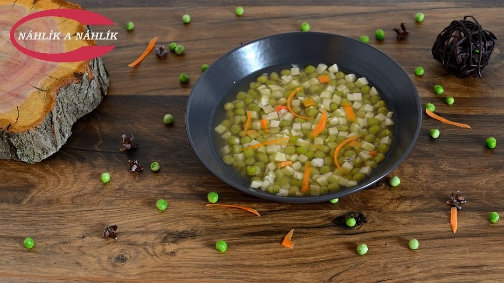

Guláše podľa @nahlikanahlik — Normy Jedál
A co jste dnes měli k obědu vy? Podělte se s námi o Vaše dnešní menu.
My můžeme vřele doporučit naši Hrachovou polévku. Tato zdravá luštěninová polévka s přidanými bramborami a zeleninou spolehlivě zahřeje i zasytí. S domácími krutonky je neodolatelná.
Dobrou chuť a krásné odpoledne!
Naše produkty můžete zakoupit online zde 👉 www.nahlikovi.cz
#jidlo #food #polevky #pastiky #hotovky #masovespeciality #nahlikanahlik #gulase #tradice #chut